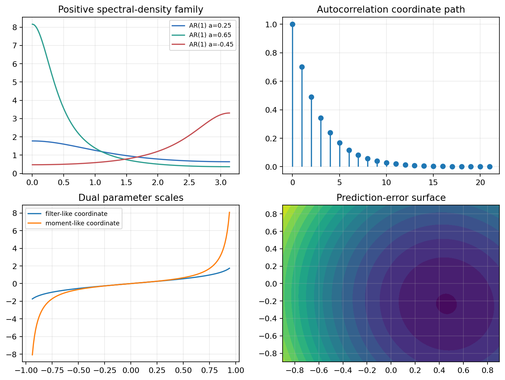

Source Span
Printed pages 215-227; PDF pages 220-232.
Chapter Question
How can dependence structure be treated geometrically rather than as only a recorded waveform?
Inspection Targets
Stationarity, autocorrelation decay, positive spectra, and covariance validity.
